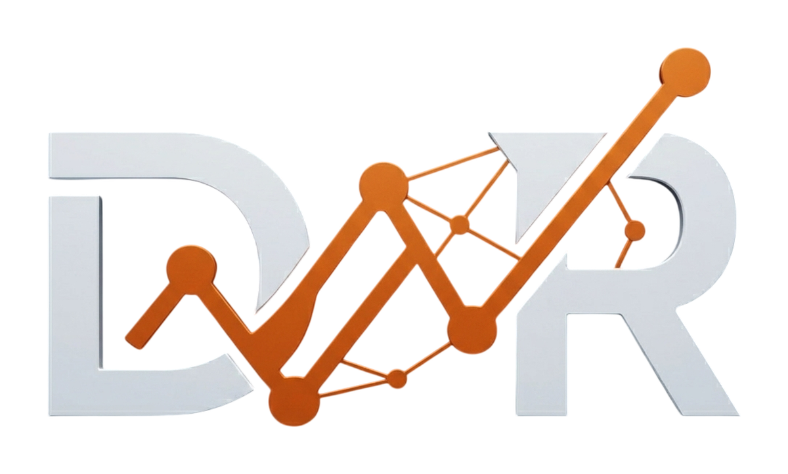

Módulo de IA Generativa · Proyecto final
Un agente experto en ICH GCP, notificación expeditiva de seguridad y la Declaración de Helsinki — construido con Gemini, ChromaDB y LangGraph, con memoria y citas literales.
David Naranjo Ramírez
Máster en Data Science & IA · Evolve Academy · Noviembre 2026
